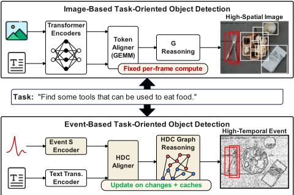
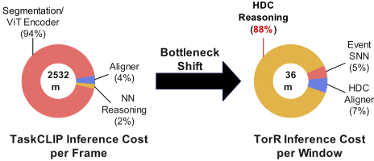
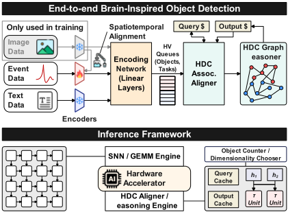
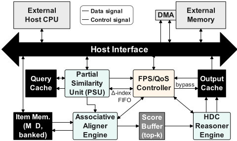
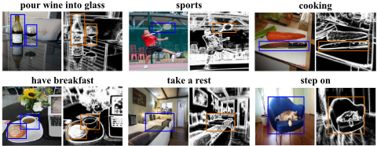

Torr: Towards Brain-Inspired Task-Oriented Reasoning via Cache-Oriented Algorithm-Architecture Co-Design
TorR：通过面向缓存的算法-架构协同设计迈向类脑任务导向推理
简介
论文针对 CLIP/ViT 类任务导向目标检测（TOOD）在边缘设备上逐帧稠密计算、访存主导能耗、且不利用视频时间相关性的问题，提出缓存导向的算法-架构协同设计 TorR。算法侧以超维计算（HDC）关联对齐替代 CLIP 式稠密对齐，用事件 SNN 编码器生成随场景缓变的 query hypervector，通过 query 缓存加逐类分数累加、仅更新翻转比特的 δ-update、以及高负载下相似度门控的 bypass 三级路径，把时间相关性转化为计算复用。架构侧实现位切片、bank 化的 item memory 与轻量控制器，以 bank 门控调节有效维度 D′、选择 int8/int4 精度，按负载满足 RT-30/RT-60 目标。设计以 Verilog RTL 在 TSMC 28nm 经 Synopsys Design Compiler 综合（1 GHz），并用综合切换活动校准的 cycle-accurate simulator 评估：60 FPS 每帧约 50 mJ、30 FPS 约 113 mJ，五任务平均 AP@0.5 为 44.27%，与最强 VLM 基线保持有界差距但能耗低数个数量级。
问题
CLIP/ViT 类任务导向检测（TOOD）管线继承图像 ViT 骨干，每帧执行几乎恒定的 attention/MLP 稠密计算，与场景实际变化量无关；分辨率增大时激活值溢出片外，访存而非运算主导延迟与能耗。同时管线把每帧当作全新问题，丢弃上一时刻的推理结果，无法利用视频流的时间相关性。数据中心可用大批量与充裕带宽掩盖该代价，而边缘设备帧率与功耗预算固定，难以实时部署这类开词汇、prompt 驱动的检测任务。
方法
提出 TorR 缓存导向算法-架构协同设计。算法侧：将 CLIP 式对齐重构为 HDC 余弦相似度与图组合推理，事件 SNN 编码器经轻量对比迁移对齐 CLIP 空间后输出双极性 hypervector query；由相似度/负载门控的轻量控制器在三条路径间调度——(i) query 缓存（深度 K）加逐类分数累加的复用，(ii) 仅更新翻转比特集合 Δ 的精确 δ-update（工作量从 O(MD′) 降到 O(M|Δ|)），(iii) 高负载且相似度超阈值时的 bypass；HDC 图推理权重（used-for/part-of 等关系）对固定任务离线预计算，运行时退化为向量 MAC。架构侧：lane 可扩展、位切片、bank 化 item memory，XNOR-popcount 共享相似度微内核，Δ-index FIFO 稀疏读，跨窗口持久的逐类累加器，bank 门控实现运行时有效维度 D′ 与 int8/int4 精度选择，FSM 按窗口锁存控制以保持前馈、时序稳健。
关键结果
TSMC 28nm、1 GHz 综合（Synopsys Design Compiler，topographical flow）：逻辑面积 5.94 mm²/总面积 6.47 mm²，峰值功耗 4.66 W，aligner 约占四分之三面积与功耗
经综合切换活动校准的 cycle-accurate 仿真：bank/精度门控与部分更新使平均功耗降至 3.05–3.52 W，同时在全部五个任务上满足 RT-60/RT-30 实时目标
每帧能耗约 50–54 mJ（RT-60）、110–117 mJ（RT-30）；最慢帧仍低于预算（RT-60 为 13.8 ms vs 16.67 ms，RT-30 为 23.6 ms vs 33.33 ms），jitter 为 1.5–2.8 ms
五个任务 AP@0.5 平均 44.27%（最强基线 iTaskCLIP* 为 53.95%，即各任务达最强基线的 75–86%）；任务 3 达 46.40 AP，超过 TOIST +3.3
对比 RTX 4090 上的 GPU 基线（450 W）：检测栈为十几到二十几 FPS，加 per-crop VLM 对齐后降至个位到十几 FPS、每帧数十到数百焦耳；本加速器实现 30–60 FPS 实时、毫焦级每帧能耗，且功耗经 D′ 门控近乎平稳
创新点
据作者所述，TorR 是首个围绕时间复用显式协同设计的端到端类脑任务导向检测管线。与已有工作的区别：(1) 指出把 HDC 天真地当作 CLIP 替代会变成 memory-bound，因此把数据搬运与复用而非 FLOPs 作为优化目标，将时间相关性显式转化为 query 缓存/δ-update/bypass 三级复用路径；(2) 以 bank 门控有效维度 D′ 作为部署期可配置的 QoS 旋钮，在精度、延迟、能耗间权衡，使成本跟随场景动态而非最坏情况模型规模；(3) 算法机制（部分相似度、相似度门控）与硬件机制（bank/精度门控、Δ 稀疏读、持久累加器）逐项对应完成协同设计。
团队参考意义
相关度级别：medium
命中能力域：2.1 IP 架构与微架构 | 2.2 RTL 设计与实现
理由：论文主体是面向边缘 AI 推理的 HDC/SNN 加速器，不属于团队的存储/高速互连 IP 产品域，HDC、SNN、CLIP 对齐等算法内容与团队技术栈无直接交集，故不判 high。但其工程方法对团队有借鉴价值：面向 PPA 的架构权衡与 bank/精度/维度多级门控的低功耗思路，与存储控制器的 bank 管理、QoS 调度、功耗管理在方法学上相通；用综合切换活动校准 cycle-accurate simulator 做 workload-driven 性能/功耗建模，与团队对内存 IP 的性能建模流程同构；可综合 RTL、Design Compiler 综合、1 GHz 目标频率的时序收敛属团队 2.2 日常能力范围，可作交叉参照。综合判定为方法可借鉴但不直接命中团队核心技术栈。
建议动作：作为方法参考存档
中文全文
arXiv:2603.22855v1 [cs.AR] 2026年3月24日
TorR: Towards Brain-Inspired Task-Oriented Reasoning via Cache-Oriented Algorithm-Architecture Co-design
Hyunwoo Oh, SungHeon Jeong, Suyeon Jang, Hanning Chen,
Abstract
构建于 CLIP 之上的任务导向目标检测（TOOD）提供了开放词汇、提示驱动的语义能力，然而密集的逐窗口计算与繁重的内存流量阻碍了实时、功耗受限的边缘部署。我们提出 TorR，一种类脑的算法-架构协同设计，它以超维（HDC）联想推理器取代 CLIP 式的密集对齐，并将时间一致性转化为复用。在算法方面，TorR 将对齐重新表述为 HDC 相似度与图组合，通过以下方式引入部分相似度复用：(i) 带逐类别分数累积的查询缓存；(ii) 当仅少量超向量比特发生变化时进行精确 𝛿 更新；(iii) 高系统负载下的相似度/负载门控旁路。在架构方面，TorR 实例化了一种具有存储体/精度门控的通道可扩展位切片条目存储器，以及一个轻量级控制器，该控制器在目标数量变化时调度旁路/𝛿/完整路径以满足 RT-30/RT-60 目标。TorR 采用 TSMC 28nm 工艺综合，并经周期精确仿真器验证，能够在每窗口毫焦级能耗（60 FPS 时 ≈ 50 mJ；30 FPS 时 ≈ 113 mJ）和低延迟抖动下维持实时吞吐量，同时在五个任务提示上取得具有竞争力的 AP@0.5（平均 44.27%），与强大的视觉语言模型（VLM）基线保持在有限差距内，但能耗低数个数量级。该设计提供了部署时可配置性（有效维度 𝐷′、阈值、精度），以便在边缘预算下权衡精度、延迟与能耗。
1 Introduction
Many edge devices must make sense of the world while obeying tight latency and power limits: a home robot asked to 'find something to scoop soup,' a wearable that helps a user 'look for a cup,' or a drone that must 'bring the object used to cut rope.' Vision-language models (VLMs) such as CLIP align images and text in a shared embedding space and enable this kind of open-vocabulary, promptable behavior [1]. Building on CLIP, task-oriented object detection (TOOD) reframes detection as selecting objects that fulfill a natural-language goal rather than a fixed label list [2-5].
Today's pipelines typically inherit image-based Vision Transformers (ViTs) as their backbones. These attention/MLP stacks perform nearly the same amount of work every frame, independent of how much the scene changes [6]. As resolutions grow, activations spill off-chip; memory movement, not arithmetic, dominates latency and energy. Datacenters hide this cost with large batches and abundant bandwidth. Edge devices cannot: they process a live stream, one moment at a time, and their budgets are effectively frame-rate-locked. Worse, the pipeline usually treats each frame as
Sanggeon Yun, Tamoghno Das and Mohsen Imani Department of Computer Science, University of California, Irvine Irvine, CA, USA {hyunwooo,m.imani}@uci.edu

a fresh problem, discarding what it learned a moment ago. Figure 1 (top) sketches this status quo.
The core idea is to turn temporal coherence into efficiency. We cache what was inferred in the previous instant and, when the current scene is similar, update only what changed instead of recomputing from scratch. A lightweight controller decides whether to (i) aggressively reuse the cached result when similarity is very high and load is heavy, (ii) refresh scores by updating the portions that changed, or (iii) fall back to a full refresh when the scene really is new. An HDC graph reasoner then injects task knowledge-relations like used-for or part-of -so the system can prioritize objects that help achieve the user's goal. The result is a pipeline whose cost follows the dynamics of the scene rather than the worstcase model size, and whose reasoning maps well to edge hardware.
We take a different path inspired by how brains work: compute when the world changes, and reason by recalling what you already know. Instead of redoing the same dense work every frame, we produce embeddings that drift gradually over time, then reuse prior computation wherever possible. Event-driven encoders naturally support this 'compute on change' view while hyperdimensional computing (HDC) provides a compact, noise-tolerant substrate for representing concepts and relations as ultra-high-dimensional hypervectors and matching them via simple associative similarity [7, 8]. These operations map cleanly to hardware and favor data reuse over raw FLOPs. Figure 1 (bottom) illustrates our approach.
本文提出 TorR，一种面向缓存的算法-架构协同设计，用于边缘端的任务导向检测。TorR 将轻量级的事件驱动编码器与超维计算（HDC）关联对齐器以及轻量级推理器相结合。TorR 不将每一帧视为重置，而是延续状态，在场景稳定时复用部分结果，并仅在出现新证据之处投入计算。据我们所知，TorR 是首个围绕时间复用进行显式协同设计的端到端类脑任务导向检测流水线。
我们的贡献如下：
2.1 Task-Oriented Detection on VLMs
CLIP 在共享嵌入空间中对齐图像与文本，通过图像-文本相似度实现开放词汇行为 [1]。在 CLIP 的基础上，任务导向目标检测（TOOD）选择能够满足自然语言目标的物体，而非固定的标签列表；近期系统包括 TaskCLIP、TOIST 和 CoTDet [2-5]。大多数流水线仍采用视觉 Transformer（ViTs）进行感知 [6]，其注意力/MLP/归一化带来基本固定的逐帧计算量与沉重的激活值传输开销——这对数据中心尚可接受，却与边缘端的延迟/能耗限制难以匹配——从而促使人们寻求一种位并行、便于复用的替代方案，以取代稠密的 CLIP 式对齐。
2.2 Event-Driven Perception: DVS & SNNs
动态视觉传感器（DVS）在对数强度发生变化时发出异步事件，在适中的空间分辨率下提供微秒级延迟与高时间分辨率 [9-11]。由于不存在固有的帧率，嵌入式系统将事件聚合为宽度为 Δ 𝑡 的窗口以进行调度 [9]。脉冲神经网络（SNN）可原生地处理此类数据流；神经形态平台（例如 Intel Loihi）通过仅在脉冲出现的位置/时刻激活，实现实时、低功耗的推理 [12]。因此，用 SNN 取代 ViT 可以消除稠密的、时钟驱动的视觉计算，并产生时间上连贯（漂移）的嵌入向量，复用优先的对齐器可以对其进行更新而非重新计算。
2.3 Hyperdimensional Computing for Alignment/Reasoning
超维计算（HDC）将符号/结构表示为超高维超向量；组合（绑定/捆绑）
Hyunwoo Oh, SungHeon Jeong, Suyeon Jang, Hanning Chen, Sanggeon Yun, Tamoghno Das and Mohsen Imani

依赖于简单的大规模并行操作，而检索则归结为相似性搜索 [7, 8]。HDC 的运算在比特层面简单且容噪，甚至已在存内（in-memory）执行 [13]。然而，当朴素地将 HDC 用作 CLIP 的替代品时，HDC 便会成为访存受限（memory-bound）的：每次查询都要扫描许多条长超向量，因此是带宽而非运算决定了运行时间/能耗；诸如 FACH 之类的现场可编程门阵列（FPGA）设计通过重构与部分结果复用来缓解这一问题 [14]，这表明数据搬运与复用才是真正的优化目标。
2.4 Motivation
一旦移除了视觉 Transformer（ViT）的开销（图 2），关联搜索 + 推理路径便占据主导且为访存受限，使关注点从浮点运算次数（FLOPs）转向数据搬运与复用。相邻的事件窗口会产生相似的查询；重新计算完整扫描会浪费时间一致性。因此，我们协同设计了一个采用余弦相似度与 𝛿 更新（部分相似度）的 HDC 关联对齐器，以及一个面向缓存的基底——位切片条目存储器与逐类累加器——并带有部署时可调的旋钮（维度 𝐷、𝛿 预算、相似度阈值、存储体/精度门控），从而使开销随场景动态而变化，而非取决于最坏情况下的模型规模。
3.1 Co-Design Overview
图 3 概述了 TorR。在训练阶段，事件脉冲神经网络（SNN）与图像/文本空间对齐，使得同一物体/任务的事件窗口与 RGB 帧共定位。在推理阶段，仅事件 SNN 与文本编码器处于激活状态。SNN 生成查询超向量（HV）𝑞；相似度门控控制器（Alg. 1）在旁路、𝛿 更新与完整路径之间进行选择。在 𝛿 更新/完整路径中，关联对齐器针对由概念 HV 构成的条目存储器库 {h𝑗}𝑀𝑗=1 计算余弦分数 𝑠𝑗 = cos(q, h𝑗)；若未被旁路，HDC 图推理器则应用预计算的任务权重 ˜𝑤𝑗 = cos(g𝑃, h𝑗)，得到最终分数 ˆ𝑠𝑗 = 𝑠𝑗 ˜𝑤𝑗。查询缓存与 𝛿 更新利用帧间相似性，而 FPS/QoS 控制器则对有效维度 𝐷′（存储体门控）进行门控，以在动态负载下满足 30/60 FPS。
3.2 Algorithmic Design
Event SNN encoder. DVS events E = {( 𝑥,𝑦, 𝑡, 𝑝 )} are aggregated over a window of width Δ 𝑡 to form a spatiotemporal tensor for a lightweight spiking backbone. Per proposal, the encoder outputs z 𝑒 ∈ R 𝑑 , mapped to a bipolar HV by a fixed projection 𝑅 and sign: q = sign ( 𝑅 z 𝑒 ) ∈ {- 1 , + 1 } 𝐷 . The text prompt is encoded once and mapped to t (precomputed under fixed tasks).
TorR: Towards Brain-Inspired Task-Oriented Reasoning via Cache-Oriented Algorithm-Architecture Co-design

![Figure 4: Cache-gated HDC reasoner with 𝛿 -alignment. A query cache (depth 𝐾 ) supplies the nearest prior query q ( 𝑡 - 1 ) . Partial similarity 𝜌 = cos ( q ( 𝑡 ) , q ( 𝑡 - 1 ) ) = 1 - 2 | Δ | 𝐷 ′ selects 𝛿 - update (update only flipped indices Δ ) or full . Under high load, if 𝜌 ≥ 𝜏 byp ∧ 𝐻 ( 𝑁,𝑞 ) , cached scores/outputs are reused. Otherwise the aligner computes 𝑠 𝑗 = cos ( q , h 𝑗 ) and the reasoner (for fixed task) applies cached weights ˜ 𝑤 𝑗 = cos ( g 𝑃 , h 𝑗 ) with g 𝑃 = t ⊙ 𝑟 ℓ 1 ⊙ · · · ⊙ 𝑟 ℓ 𝑘 , producing ˆ 𝑠 𝑗 = 𝑠 𝑗 ˜ 𝑤 𝑗 . The FPS/QoS controller gates 𝐷 ′ (bank gating).](assets/p112/figures/fig_4.png)
Small training bridge (image → event). We apply a light contrastive transfer so event features sit near image features in CLIP space while preserving text alignment. With frozen CLIP encoders 𝑓 img , 𝑓 text and trainable SNN 𝑓 evt , for frame 𝐼 and window 𝑊 ( 𝑡 0 ) = {( 𝑡, 𝑝 ) | 𝑡 0 ≤ 𝑡 < 𝑡 0 + Δ 𝑡 } :
With cosine 𝑠 (· , ·) and temperatures 𝜏 𝑐 , 𝜏 𝑡 :
Associative aligner. Item memory stores { h 𝑗 } 𝑀 𝑗 = 1 ⊂ {- 1 , + 1 } 𝐷 . With effective dimension 𝐷 eff = 𝐷 ′ (active banks), cosine scores are
and L = L con + 𝛼 L zs .
since ∥ q ∥ = ∥ h 𝑗 ∥ = √ 𝐷 eff for bipolar vectors.
Query cache & similarity gate (Fig. 4). Among the last 𝐾 queries, the cache supplies the nearest q ( 𝑡 - 1 ) . Let Δ = { 𝑖 : 𝑞 ( 𝑡 ) 𝑖 ≠ 𝑞 ( 𝑡 - 1 ) 𝑖 } . Then
If 𝜌 ≥ 𝜏 𝑔 choose 𝛿 -update ; else perform full and refresh the cache. Alg. 1 combines this with load to select the path and 𝐷 ′ .
Partial-similarity reuse ( 𝛿 -updates). Maintain per-class accumulators and update only flipped indices:
where ( ) ( - 1 ) 2 . Work drops from to .
Aggressive bypass. Under high load, if 𝜌 ≥ 𝜏 byp ∧ 𝐻 ( 𝑁,𝑞 ) the controller reuses cached scores/outputs and skips both 𝛿 -update and the reasoner.
𝑞 𝑡 𝑖 - 𝑞 𝑡 𝑖 ∈ {± } 𝑂 ( 𝑀𝐷 ′ ) 𝑂 ( 𝑀 | Δ |) HDC graph reasoner. Relations { 𝑟 ℓ } use Hadamard binding ( ⊙ ). A 𝑘 -hop path 𝑃 = ( ℓ 1 , . . . , ℓ 𝑘 ) forms g 𝑃 = t ⊙ 𝑟 ℓ 1 ⊙ · · · ⊙ 𝑟 ℓ 𝑘 . For fixed tasks, reasoner weights are precomputed as ˜ 𝑤 𝑗 = cos ( g 𝑃 , h 𝑗 ) and applied to aligner scores to yield ˆ 𝑠 𝑗 = 𝑠 𝑗 ˜ 𝑤 𝑗 . A MUX after the reasoner selects between bypass / aligner-only and aligner × reasoner outputs.
FPS/QoS controller. Given object count 𝑁 , similarity 𝜌 , and queue depth 𝑞 , the controller implements Alg. 1: it selects bypass / 𝛿 - update / full and gates 𝐷 ′ (bank gating) to respect the FPS budget.
Algorithm 1 Path policy (similarity-only controller)
Hyunwoo Oh, SungHeon Jeong, Suyeon Jang, Hanning Chen, Sanggeon Yun, Tamoghno Das 和 Mohsen Imani

4 Hardware Architecture
The accelerator realizes the cache-gated hyperdimensional pipeline on a standard RTL substrate. Each window begins by comparing the current query hypervector q ( 𝑡 ) with the nearest cached query q ( 𝑡 - 1 ) . The resulting similarity 𝜌 and flipped-index set Δ drive a small controller that selects the execution path and gates the effective hypervector dimension 𝐷 ′ . A lane-parallel associative aligner then computes cosine scores against the item memory; when evidence is stable, a cached output is returned, otherwise a lightweight reasoner applies task weights and commits results to the output cache.
4.1 Top-level overview
图5展示了数据通路与控制。查询缓存存储最近 𝐾 个查询；部分相似度单元（PSU）产生 𝜌，并将翻转位置填入 Δ 索引先进先出（FIFO）队列。FPS/QoS 控制器利用 𝜌 和负载（对象数量与队列深度）在旁路、增量与完整执行之间进行选择。它还使能项存储器中位切片存储体的一个子集以实现 𝐷′，选择累加器精度，并设置归一化移位 log 2 𝐷′。关联对齐器从被使能的存储体中读取概念超向量，并产生一个得分向量。top𝑘 键与裕量对推理进行门控：当二者均与前一窗口匹配时，跳过推理并转发缓存的输出；否则，推理器将得分乘以预先计算的任务权重，并在通过直接存储器访问（DMA）传输至主机之前更新输出缓存。
4.2 Shared similarity micro-kernel
所有引擎复用同一个用于双极性余弦的微内核。按位 XNOR 实现 ±1 乘法，一个短加法树对匹配与不匹配进行 popcount 统计，再通过固定的 log 2 𝐷′ 位右移完成归一化。该内核支持两种直接映射到算法的访问模式：用于完整扫描的流式读取，以及以 Δ 为索引、用于增量更新的稀疏读取。每类累加器跨窗口持续保存，因此稀疏修正无需重新计算未变化的列即可生效。每次读取都会遵循存储体使能，因此 𝐷′ 充当运行时的 QoS 旋钮。
4.3 Associative cosine aligner
对齐器计算
在全量模式下，索引生成器每个周期从使能的存储体中流式读出一列；每一列被广播到 𝑊 个类别通道，这些通道执行 XNOR → popcount 并累加到片上寄存器中。在增量模式下，对齐器从 Δ-FIFO 中弹出索引，并仅访问这些列。由于累加器跨窗口持续保存，一个翻转的位会在余弦空间中贡献一个幅值为 2/𝐷′ 的带符号修正，其实现方式是在整数域中做一次 ±2 更新，随后进行最终的归一化移位。在 𝐵 个存储体和 𝑊 个通道的配置下，延迟按如下规律扩展
并且当查询变化较小时，存储器流量从 𝑂(𝑀𝐷′) 降至 𝑂(𝑀|Δ|)。
4.4 Partial-similarity unit
部分相似度单元（PSU）检测查询漂移并提供稀疏索引。通过与缓存的查询做异或（XOR）运算来识别翻转的位；popcount 得到 |Δ|，再经仿射映射产生 𝜌 = 1 - 2|Δ|/𝐷′。PSU 将 Δ 写入索引 FIFO，供对齐器的增量模式使用，并将 𝜌 转发给控制器。由此，PSU 通过引导对齐器执行稀疏更新，并在高负载且高相似度的情况下引导其进入旁路（bypass），将时间相干性转化为实际的节省。
4.5 Reasoner and cache gating
推理器利用片上存储的预计算任务权重 𝑤 𝑗 对 𝑠 𝑗 进行缩放。对于固定的提示，这些权重在离线阶段计算一次；在运行时，推理器退化为一个带舍入与饱和的向量乘累加（MAC）运算。当 top𝑘 键和裕量（margin）与上一窗口匹配时，推理器保持门控状态，并复用缓存的输出。若提示在线发生变化，则可将提示超向量视为查询，利用同一相似度核重新计算 𝑤 𝑗。
4.6 Policy to hardware controls
控制器将 Algorithm 1 映射到一小组窗口级寄存器：mode 选择 bypass、delta 或 full；bank-enable 位定义 𝐷 ′；precision 位选择 int8 或 int4 累加器；归一化移位量等于 log 2 𝐷 ′；头指针与尾指针驱动 Δ-index FIFO。控制信号每个窗口锁存一次，使数据通路保持前馈结构并具有时序鲁棒性。同一寄存器堆还配置 PSU 与推理器的使能信号，从而确保对齐总是先于任何复用推理的决策。
4.7 Bandwidth, energy, and timing
全量扫描（full scan）每个窗口从条目存储器（item memory）读取 𝑀𝐷′ 位，而 delta 模式读取 𝑀|Δ| 位外加 |Δ| 个索引。采用 bank 划分后，delta 模式下每个 bank 约提供 𝑀|Δ|/𝐵 位。时钟门控与 bank 门控遵循所选的模式与 bank 掩码，因此动态功耗随 |Δ| 和 𝐷′ 缩放。对齐器（aligner）与推理器（reasoner）采用全流水线设计，在 full 模式下每周期产出一列，在 delta 模式下每周期产出一个翻转后的列，推理器中每条 lane 每周期产出一个得分乘积。余弦归一化只是一次移位，因此关键路径上不出现除法器。
TorR：通过面向缓存的算法-架构协同设计迈向类脑任务导向推理

4.8 Interfaces and state
主机接口通过直接存储器访问（DMA）接收查询，并返回得分与边界框。窗口级状态由查询缓存、Δ 索引 FIFO、每类累加器以及输出缓存组成。一个小型有限状态机（FSM）按序执行以下步骤：锁存控制信号、以选定模式运行对齐器、可选地运行推理器、更新各缓存，并输出结果。这种安排使顶层设计保持简洁，同时将复杂度集中在共享相似度内核内部。
5.1 Experimental Setup
我们评估了五个代表日常活动的面向任务提示词：1. 将葡萄酒倒入玻璃杯，2. 运动，3. 烹饪，4. 吃早餐，5. 休息。准确率以 AP@0.5（IoU=0.5）来衡量。系统指标为端到端延迟、吞吐量（每秒帧数，FPS）、功耗以及每帧能耗。所有执行结果均由一个周期精确仿真器产生，该仿真器重放我们的工作负载，并依据我们以 Verilog HDL 编写、采用 TSMC 28 nm 工艺在 1 GHz 下进行 ASIC 综合的加速器所得到的翻转活动与时序进行了校准。该加速器通过存储体门控的有效维度（𝐷′）提供运行时服务质量（QoS），并设有一条缓存辅助的部分更新路径，该路径由一个轻量级控制器管理，以强制实现 30/60 FPS 目标，分别定义为 RT-30/RT-60。
5.2 ASIC Synthesis (28 nm)
我们使用 Synopsys Design Compiler 在拓扑综合流程下对 Verilog 寄存器传输级（RTL）代码进行综合（TT，1.0 V，1 GHz）。逻辑功耗取自综合功耗模型，并在后续使用我们执行实验中的周期精确（cycle-accurate）活动轨迹对其进行激励；静态随机存取存储器（SRAM）数据来自编译生成的 28 nm 视图。该设计有意以计算为中心：大部分硅片面积用于评估相似度的关联对齐器（associative aligner），而控制、排序和输入/输出（I/O）则保持轻量。表 1 汇总了不含底层算子簿记开销的完整硬件占用情况。
| Block / Component | Area (mm 2 ) | Power (mW) |
|---|---|---|
| Logic (synthesized) Associative Aligner | 4.488 | 3522.56 |
| Lightweight Reasoner | 0.642 | 504.32 |
| Partial-Update Unit | 0.28 | 220.16 |
| Score Buffer (top- 𝑘 ) | 0.14 | 110.08 |
| Sorter | 0.14 | 110.08 |
| Controller (RT/QoS) | 0.07 | 55.04 |
| Host IF / DMA | 0.105 | 82.56 |
| Δ -index FIFO & misc. | 0.07 | 55.04 |
| Total (logic) | 5.937 | 4659.84 |
| SRAM macros (compiled) Item memory (banked) | 0.5 | 120 |
| Query/Output caches | 0.03 | 15 |
| Total (SRAM) | 0.53 | 135 |
| Grand total | 6.467 | 4794.84 |
| Block / Component | Area (mm 2 ) | Power (mW) |
总体而言，逻辑部分占用 5.94 mm²（总面积为 6.47 mm²），峰值功耗达 4.66 W；仅对齐器一项就约占面积和功耗的四分之三，这体现了该架构对单遍相似度计算的侧重。这些综合数据为下一节所用的周期精确仿真器提供了参数；在该仿真器中，存储体/精度门控与部分更新将平均功耗降至 3.05-3.52 W 范围，同时在全部五个任务上维持 RT-60/RT-30。
5.3 Accelerator Execution Results
所有测量结果均来自工作在 1 GHz 的周期精确仿真器，其翻转活动取自 28 nm 综合。我们首先给出五个任务上的延迟包络，随后详细给出各任务的运行时间与能耗，最后与 RTX 4090 上具有代表性的图形处理器（GPU）流水线进行吞吐量与能耗对比。
| Mode | Global Min | Task (Min) | Global Max | Task (Max) |
|---|---|---|---|---|
| RT-60 | 6.8ms | have breakfast | 13.8ms | sports sports |
| RT-30 | 12.9ms | have breakfast | 23.6ms |
| Mode | Global Min | Task (Min) | Global Max | Task (Max) |
5.3.1 延迟包络。该包络在两个目标下均显示出充裕的余量。即使是最慢的帧也保持在预算之内（RT-60 下为 13.8 ms 对 16.67 ms；RT-30 下为 23.6 ms 对 33.33 ms），这对于吸收直接存储器访问（DMA）波动和主机抖动至关重要。具有较高时间一致性的任务（如 have breakfast）始终产生最低的延迟，而运动剧烈的场景（如 sports）则位于该范围的上端；这一排序与控制器在运动增强时激活更多存储体并削减复用的行为相吻合。
5.3.2 RT 目标下的各任务运行时间。在所有任务中，p95 延迟均远在预算之内，且抖动保持很小（RT-60 下为 1.5-2.1 ms；RT-30 下为 2.2-2.8 ms），这表明控制器的部分更新策略与 𝐷 ′ 门控产生的是可预测的服务，而非突发性的停顿。每帧能耗按照帧预算呈现预期的缩放关系，并与经综合校准的功耗模型相符：RT-60 下约为 50-54 mJ，RT-30 下约为 110-117 mJ。复用更多的场景（have breakfast、take a rest）表现出最低的中位延迟与能耗，而高运动场景（sports、pour wine）需要更多处于激活状态的存储体，但仍留有毫秒级的余量。
Hyunwoo Oh, SungHeon Jeong, Suyeon Jang, Hanning Chen, Sanggeon Yun, Tamoghno Das and Mohsen Imani
| Task | RT-60 (60 FPS target).Median | RT-60 (60 FPS target).p95 | RT-60 (60 FPS target).Jitter | RT-60 (60 FPS target).Headroom | RT-60 (60 FPS target).Power | RT-60 (60 FPS target).Energy | RT-30 (30 FPS target).Median | RT-30 (30 FPS target).p95 | RT-30 (30 FPS target).Jitter | RT-30 (30 FPS target).Headroom | RT-30 (30 FPS target).Power | RT-30 (30 FPS target).Energy |
|---|---|---|---|---|---|---|---|---|---|---|---|---|
| pour wine | 9.4 | 11.3 | 1.9 | 5.37 | 3.2 | 53 | 17.2 | 19.9 | 2.7 | 13.43 | 3.5 | 116 |
| sports | 9.8 | 11.9 | 2.1 | 4.77 | 3.22 | 54 | 17.8 | 20.6 | 2.8 | 12.73 | 3.52 | 117 |
| cooking | 8.7 | 10.6 | 1.9 | 6.07 | 3.12 | 51 | 16.5 | 18.8 | 2.3 | 14.53 | 3.4 | 113 |
| have breakfast | 7.9 | 9.4 | 1.5 | 7.27 | 3.05 | 50 | 15.1 | 17.3 | 2.2 | 16.03 | 3.32 | 110 |
| take a rest | 8.1 | 9.7 | 1.6 | 6.97 | 3.06 | 50 | 15.4 | 17.6 | 2.2 | 15.73 | 3.33 | 110 |
| Average | 8.78 | 10.58 | 1.8 | 6.09 | 3.13 | 51.6 | 16.4 | 18.84 | 2.44 | 14.49 | 3.41 | 113.2 |
| Task | RT-60 (60 FPS target).Median | RT-60 (60 FPS target).p95 | RT-60 (60 FPS target).Jitter | RT-60 (60 FPS target).Headroom | RT-60 (60 FPS target).Power | RT-60 (60 FPS target).Energy | RT-30 (30 FPS target).Median | RT-30 (30 FPS target).p95 | RT-30 (30 FPS target).Jitter | RT-30 (30 FPS target).Headroom | RT-30 (30 FPS target).Power | RT-30 (30 FPS target).Energy |
| Method | Assumptions | FPS (RTX4090) | Energy/Frame (RTX4090) |
|---|---|---|---|
| TOIST (DETR) | standard COCO input | 15-25 | 30-18 J |
| iTaskCLIP (ViT-B/16) | 120-200 crops/frame | 5-12 | 90-38 J |
| iTaskCLIP (ViT-L/14) | 120-200 crops/frame | 2-6 | 225-75 J |
| Ours (RT-60) | single-pass similarity | 60.3 | 50mJ |
| Ours (RT-30) | single-pass similarity | 30.1 | 113mJ |
| Method | Assumptions | FPS (RTX4090) | Energy/Frame (RTX4090) |
5.3.3 吞吐量/功耗与 GPU 基线的对比。该对比凸显了加速器为何能够端到端地承载整个系统。在 4090 上，仅检测器的堆叠方案落在十几至二十几 FPS 的区间；加入逐裁剪区域的视觉语言模型（VLM）对齐后，吞吐量会降至十位数的低端乃至个位数，具体取决于骨干网络规模与裁剪区域数量，且每帧能耗达数十至数百焦耳。相比之下，本固定功能设计将所有相似度计算都保留在专用数据通路上，避免对裁剪区域重新编码，并通过 𝐷 ′ 门控使功耗几乎保持平稳。其结果是在毫焦级能耗下实现实时吞吐量（30-60 FPS），同时在全部五个任务上保持低抖动和一致的余量。
5.4 Task Accuracy vs. Prior Models
在这五个任务上，我们的模型在时间一致性较高的情况下具有竞争力，而在其余情况下与最强的 VLM 基线保持在有界差距之内。在前两个任务上，我们取得了 54.62 和 52.07 的 AP，与 iTaskCLIP* 的差距分别在 8.74 和 9.95 个百分点以内，并接近 TOIST*。在第三个任务上，我们达到 46.40 的 AP，以 +3.3 的优势超过 TOIST。后两个任务更具挑战性（34.07 / 34.17），但与 iTaskCLIP* 的差距仍然适中（8.52 / 11.45）。对五个任务取平均，我们的平均 AP 为 44.27%（iTaskCLIP* 为 53.95%），即在每个任务上达到最强基线的 75-86%，同时实现了该加速器所展示的毫焦级实时执行。这与系统设计相一致：复用友好的场景获得最大的精度与能耗收益，而运动密集的场景则通过受控地增加活跃维度来保持紧凑的 p95 延迟，同时不牺牲帧预算符合性。
| Method | pour wine | sports | cooking | have breakfast | take a rest |
|---|---|---|---|---|---|
| GGNN | 40.7 | 43.6 | 37.6 | 39.1 | 40.5 |
| TOIST | 52.9 | 52.8 | 43.1 | 48.1 | 46.7 |
| iTaskCLIP | 63.51 | 65.54 | 56.08 | 44.39 | 44.76 |
| iTaskCLIP* | 63.36 | 62.02 | 56.14 | 42.59 | 45.62 |
| Ours (SW) | 54.62 | 52.07 | 46.4 | 34.07 | 34.17 |
| Method | pour wine | sports | cooking | have breakfast | take a rest |
6 Conclusion
我们提出了 TorR，一种面向任务的目标检测的面向缓存的算法-架构协同设计，其以“按变化计算”（compute-on-change）为优先。通过将超维关联推理器与部分更新、维度门控以及轻量级实时控制器相结合，该系统在严苛的功耗包络下维持了稳定的吞吐量，将经综合校准的周期级精度转化为可预测、部署就绪的行为。
展望未来，我们看到了多条扩展 TorR 的路径：结合动态电压频率调节（DVFS）的更细粒度 𝐷′ 与精度门控；学习得到的运行时策略（bandits/RL）与可微分调度；通过任务感知蒸馏、量化感知训练与提示条件化剪枝提升精度；更深入的存储器工作（bank 布局、低泄漏静态随机存取存储器（SRAM）、轻量级压缩、近存相似性）；多提示与多相机并发；向先进工艺节点的迁移；以及基于事件相机/惯性测量单元（IMU）的系统级验证、功耗封顶运行与长时程持续适应。我们计划发布参考寄存器传输级（RTL）与评估轨迹，以促进可复现性与标准化基准测试。